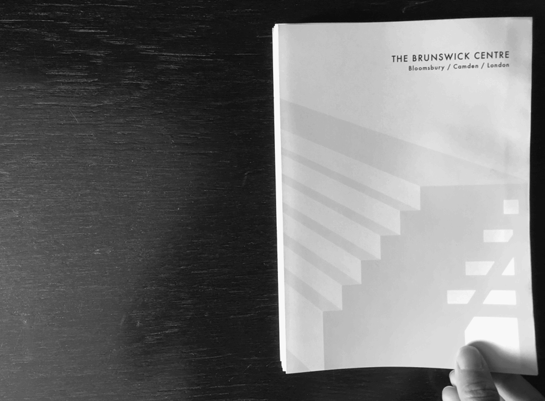
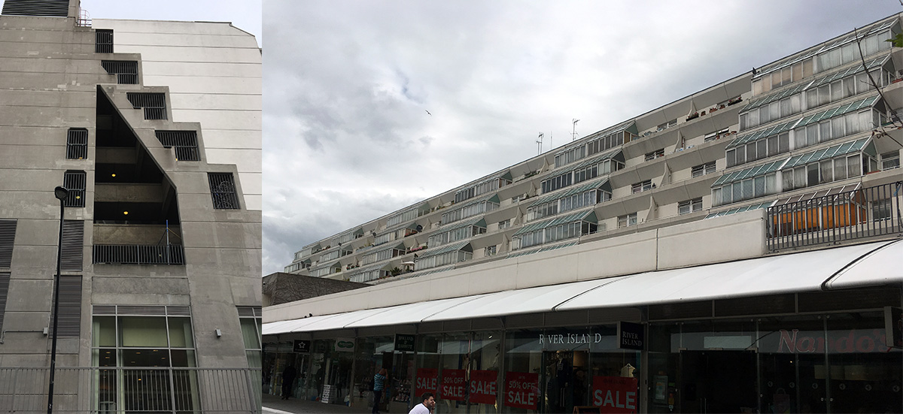
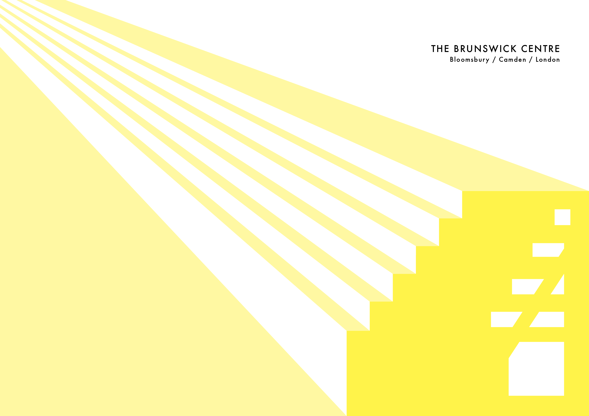
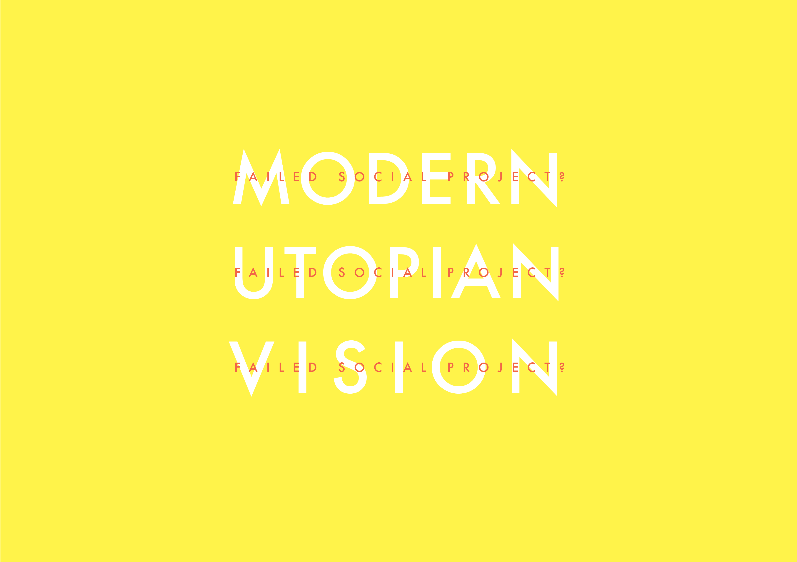
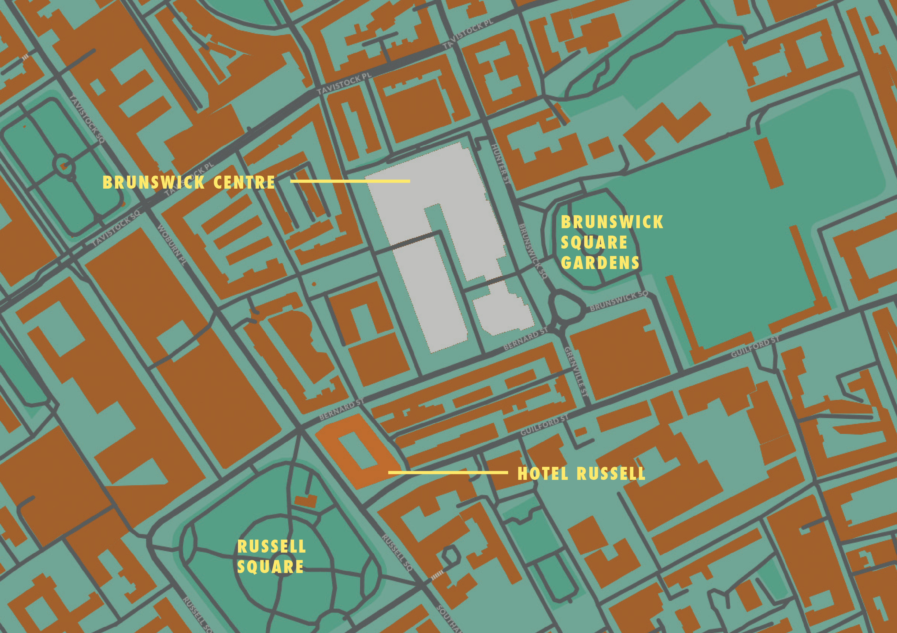
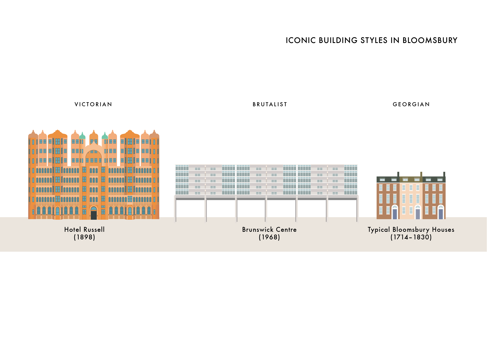

A visual guide to the Brunswick Centre, London
Self-taught in graphic design, was interested in pushing my skills to the next level by studying an intensive 3 week course at Central St. Martins University of the Arts in London.
One of the projects was to explore little known places and historical areas of London, and record our observations and research into a small book, communicating the signifiance of this place to a wider audience in images and text.
Being an admirer of the Bauhaus and modern design, I chose to produce a visual guide to the Brunswick Centre. This was a controversial building when it was built in 1968, particularly when you consider the surroundings in which it was built. Today these flats are highly coveted by designers and creatives, and a 2 bedroom flat sells for about £420,000.
The Brunswick Centre
The Guide
   